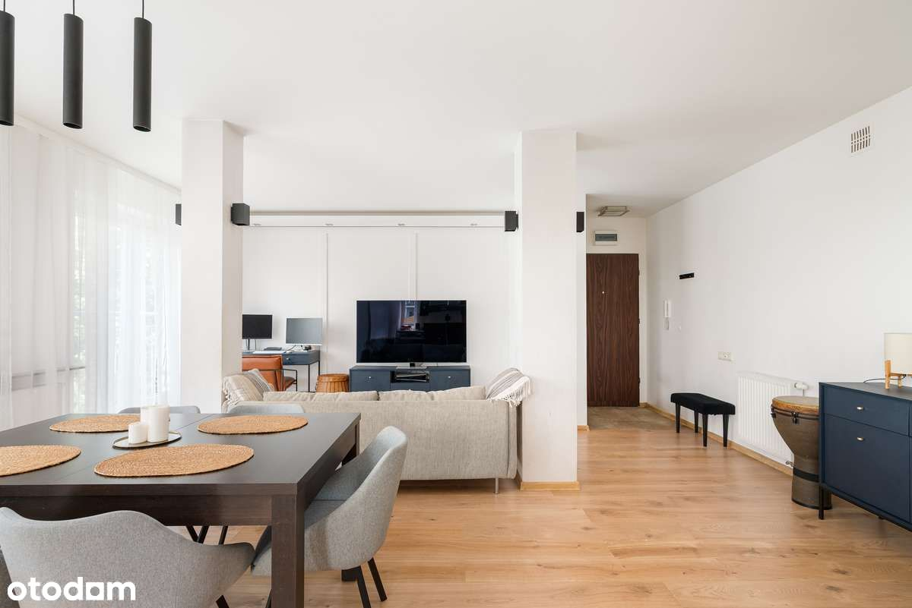

Nowoczesne 3-pokojowe mieszkanie z balkonem – 77,81 m² | Ząbki, ul. Skrajna 32D| Tuż pod Warszawą
Biuro nieruchomości Esteum ma przyjemność zaprezentować ofertę sprzedaży przestronnego, funkcjonalnego mieszkania zlokalizowanego w spokojnej części Ząbek, przy ul. Skrajnej 32D. Nieruchomość idealna dla rodziny lub osób poszukujących komfortowej przestrzeni w sąsiedztwie Warszawy.
Podstawowe informacje:
Wyposażenie i udogodnienia:
Lokalizacja:
Nieruchomość położona w dynamicznie rozwijającej się części Ząbek, w pobliżu pełnej infrastruktury miejskiej. W zasięgu spaceru znajdują się sklepy, punkty usługowe, placówki edukacyjne oraz przystanki komunikacji miejskiej z dogodnym dojazdem do centrum Warszawy. Cicha, spokojna okolica, idealna do życia.
Informacje finansowe:
Mieszkanie gotowe do zamieszkania – nie wymaga nakładów finansowych. Nieruchomość stanowi odrębną własność z księgą wieczystą, bez obciążeń.
Zapraszamy do kontaktu z biurem Esteum w celu umówienia prezentacji i uzyskania szczegółowych informacji.
